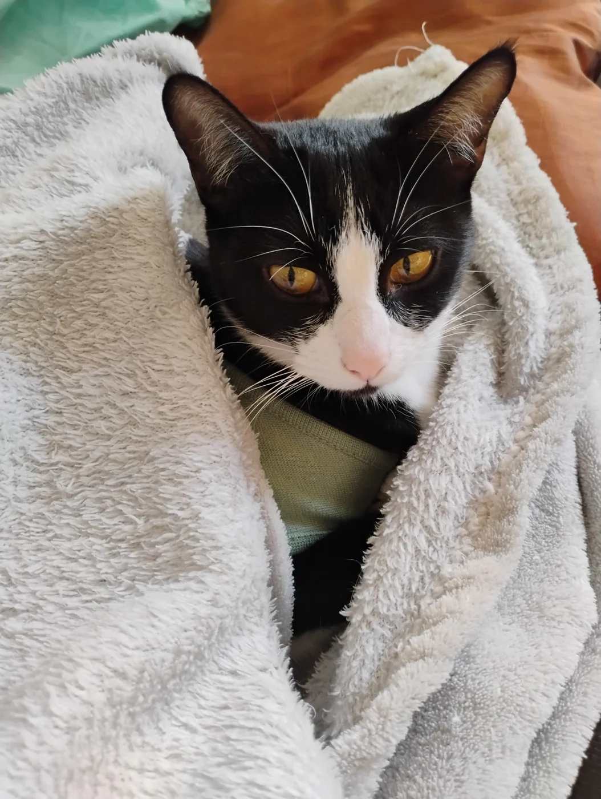
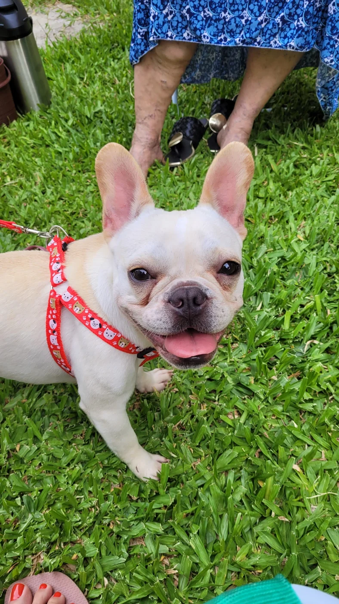
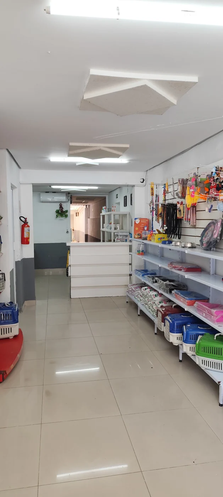
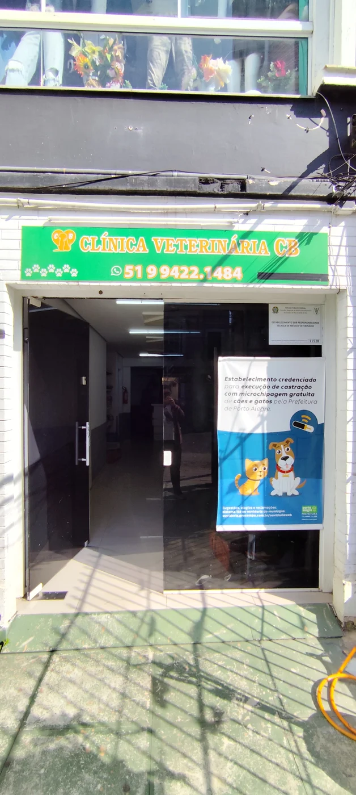

01
Consultas & acompanhamento
Avaliação clínica geral e orientação sobre a saúde do seu cão ou gato.
Conversar sobre consultasNA CIDADE BAIXA, EM PORTO ALEGRE
Seu pet faz parte da família. Por aqui, a saúde de cães e gatos recebe atenção, carinho e um cuidado que começa na escuta.
4,8no Google · 198 avaliações*
Cada vida, um cuidado único.
Para eles.

Cidade Baixa · POABEM-VINDO À CLÍNICA CB
Na Cidade Baixa, a Clínica Cb é um ponto de cuidado para cães e gatos — e de orientação para quem divide a vida com eles.
De uma consulta de rotina aos momentos que pedem mais atenção, você encontra serviços veterinários e um canal direto para conversar sobre as necessidades do seu pet.
SAÚDE, EM TODOS OS MOMENTOS
Da prevenção aos cuidados que pedem mais atenção. Converse com a equipe sobre indicação, preparo e disponibilidade.
Avaliação clínica geral e orientação sobre a saúde do seu cão ou gato.
Conversar sobre consultasProcedimentos cirúrgicos e castrações, com avaliação prévia e orientações de cuidado.
Consultar procedimentosExames laboratoriais e testes específicos, incluindo testes rápidos para FIV/FeLV.
Perguntar sobre examesVacinação e vermifugação para acompanhar as necessidades de cada fase da vida.
Conversar sobre prevençãoSuporte e monitoramento para pets que precisam de cuidados contínuos.
Consultar disponibilidadeProfilaxia dentária e limpeza de tártaro, conforme avaliação veterinária.
Saber mais sobre o cuidadoLigue para confirmar a disponibilidade da equipe antes de vir à clínica.
UM POUCO DO NOSSO DIA A DIA
Alguns registros do espaço e dos pets.
Toque em uma imagem para ver os detalhes.
198 avaliações no Google*
CONFIANÇA QUE VEM DE QUEM CONHECE
Conheça os relatos de quem já passou pela Clínica Cb e confira as avaliações diretamente no Google.
Ver a clínica no Google * Nota e quantidade fornecidas para esta proposta. Não são atualizadas automaticamente.ANTES DA VISITA
Algumas informações para facilitar o próximo passo.
Perguntar à equipeEntre em contato pelo WhatsApp ou telefone (51) 99422-1484. A equipe poderá informar os horários disponíveis e orientar sua visita. O contato pelo site não confirma um agendamento.
A clínica atende cães e gatos. Para dúvidas sobre um serviço específico, converse diretamente com a clínica.
Se disponíveis, leve a carteira de vacinação, exames anteriores e informações sobre medicamentos em uso. Confirme com a equipe se há preparo específico para o atendimento solicitado.
O atendimento segue os horários apresentados abaixo, sem anúncio de plantão 24 horas. Em caso de urgência, ligue para confirmar a disponibilidade. Se a clínica estiver fechada ou não puder atender, procure um serviço veterinário de emergência disponível.
A participação em programas municipais depende das regras, dos cadastros e das vagas disponíveis. Consulte o canal 156 da Prefeitura de Porto Alegre para informações atuais; o site não realiza inscrições nem garante atendimento gratuito.
Consultar publicação da PrefeituraESTAMOS AQUI, PERTINHO
Conte o que seu pet precisa. A equipe orienta sobre atendimento, serviços e disponibilidade.
Chamar no WhatsApp (51) 99422-1484Acompanhe @clinicacidbaixaRua José do Patrocínio, 621
Cidade Baixa · Porto Alegre, RS
CEP 90050-000